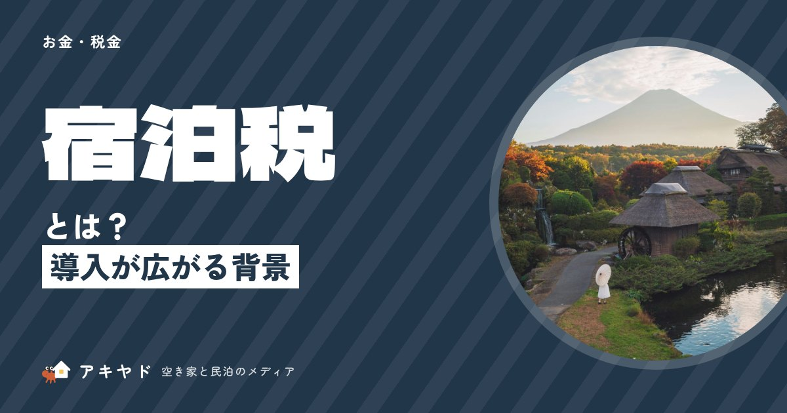

宿泊税とは？民泊は対象？東京都は2027年4月に定率3%へ
公開日
更新日
読了目安 約4分
執筆：アキヤド編集部
監修：石原 佑真

宿泊税は、宿に泊まる人が自治体に納める税です。金額も、民泊に課すかどうかも自治体で違います。東京都は2027年4月から民泊も対象になり、料金の3%（1人1泊13,000円未満はかからない）に。熱海市の例と、宿の手続きを解説します。
この記事のポイント
- 民泊を始める前に、その自治体が民泊に宿泊税をかけるか確かめる必要があります。かかるかは自治体しだいで、東京都は今は対象外、熱海市は対象です。最新は自治体の窓口で確認を。
- 東京都で民泊をするなら、2027年4月から宿泊税の手続きが必要になります。宿泊料金の3%で、1人1泊13,000円未満ならかかりません（免税点）。詳しくは東京都の案内で確認を。
- 熱海市で民泊をするなら、1人1泊200円の宿泊税を預かる準備が要ります。熱海市は2025年4月に導入し、民泊も対象です。
- 宿泊税は、宿の側が預かって納める手間が毎月かかります。熱海市では、毎月分を翌月末までに申告・納入します。
宿泊税は、民泊も対象になるのか？
民泊を始める前に、その自治体が民泊に宿泊税をかけるかを確かめる必要があります。かかるかは自治体しだいで、東京都は今は対象外、熱海市は対象です（※2026年10月時点。最新は自治体の窓口で確認を）。
宿泊税のしくみ
- 01
宿泊者が支払う
宿泊料金とあわせて
- 02
宿が預かる
宿が受け取って記録する（特別徴収）
- 03
自治体に納める
定められた期限までに申告・納付
- 04
観光に使われる
受け入れ環境の整備や観光振興に
宿泊税は、宿に泊まる人が払う税で、自治体が条例で独自に決める（法定外税）ため、民泊を対象にするかどうかも自治体ごとに違います。「宿泊施設なら一律にかかる」という税ではありません。
運営者が宿泊者から預かって自治体に納める仕組み（特別徴収）が一般的で、宿泊料金とは別に支払ってもらいます。税額の決め方も、1泊いくらの定額と、宿泊料金に割合をかける定率があります。「民泊（住宅宿泊事業）」は、民泊新法にもとづく民泊のことです。
出典：東京都主税局「宿泊税」、熱海市「宿泊税の概要」※2026年10月時点。上の表以外の自治体は、各自治体の案内か総務省「法定外税の状況」で確認してください。
東京都の見直しで、何がいくら変わるのか？
東京都で民泊をするなら、2027年4月から宿泊税の手続きが必要になります。東京都は、2027年4月1日から宿泊税を定額から定率3%に変え、免税点（これ未満なら税がかからない料金の境目）を13,000円に引き上げ、民泊も課税対象に加えます。1人1泊13,000円未満ならかかりません。2026年3月27日に条例の改正が可決され、同年6月30日に総務大臣の同意を得ました（東京都主税局）。詳しくは東京都の案内で確認してください。
宿泊料金は、食事代などを含まない素泊まりの料金（税抜き）で判断します。1室に2人以上で泊まるときは、1人あたりに換算します。子どもでも、基準を超えれば課税されます。
※ 「2027年4月以降」の列は、公表されている税率3%・免税点13,000円から計算した試算です。民泊は現行では対象外のため、現行の列はホテル・旅館の場合です。
東京都は、民泊のうち約3割の施設が課税対象になる見込みと試算しています。東京で民泊を運営する場合は、料金が13,000円以上になる日があるかどうかが、まず確認する点です。
熱海市の例では、運営者は何をするのか？
熱海市で民泊をするなら、1人1泊200円の宿泊税を預かる準備が要ります。預かって納める手間は毎月かかります。熱海市は2025年4月1日に宿泊税を導入し、旅館・ホテル・簡易宿所と住宅宿泊事業（民泊）の宿泊者から、1人1泊200円を徴収します（熱海市）。
- 免除される人：小学生以下、修学旅行などの学校行事の参加者、市長が災害などで避難が必要と認めた人など。
- 預かり方：宿泊者は宿泊施設に宿泊税相当額を支払い、施設の経営者（特別徴収義務者）が徴収します。
- 納め方：毎月1日から末日までの分を、翌月末日までに申告・納入します。一定の要件を満たせば、3か月ごとの申告も可能です。
- 使い道：花火大会などのイベントの開催や、フリーWi-Fiの整備などに充てる予定とされています。
運営者は、予約ページや到着前の案内に、宿泊税の有無と支払い方法を書いておくと、宿泊者の不満や問い合わせを減らせると考えます。料金に含むのか、現地で別に払うのかを明記してください。
予約サイト経由の予約で、サイト側が代わりに徴収するかどうかは、自治体やサイトで扱いが異なる場合があります。事前に、自治体の窓口と利用するサイトの案内で確認してください。
自分の宿は、何から確認すればよいか？
- 所在地の自治体の宿泊税の有無を調べる：条例の有無と、民泊が対象かを確認します。
- 税額と免税の条件を確認する：定額か定率か、免税点があるか、免除される宿泊者は誰かを確認します。
- 特別徴収の登録をする：熱海市のように、経営者が徴収義務者として登録・申告する自治体があります。
- 料金表示を直す：予約ページに、宿泊税の金額と支払い方法を書きます。
宿泊税を含めた売上や客室単価（1室あたりの宿泊料金）の見方は「稼働率・客室単価・RevPARとは？」、料金の見せ方は「予約サイト（OTA）と自社予約、どう使い分ける？」で説明しています。
まとめ：民泊が対象かどうかを、自治体ごとに確かめる
宿泊税は、税額も民泊の扱いも自治体ごとに違います。東京都は、2027年4月から民泊も対象になり、税額は宿泊料金の3%（13,000円未満は課税なし）に変わります。熱海市は、すでに民泊を含めて1人1泊200円を徴収しています。
次の一歩は、所在地の自治体の「宿泊税」のページで、民泊が対象か・税額・申告の期限の3点を確認することです。予約ページの料金表示も、あわせて見直してください。
よくある質問
Q民泊も宿泊税の対象になりますか？
A自治体によって異なります。東京都は現行では民泊が対象外で、2027年4月1日から対象になります。熱海市は住宅宿泊事業（民泊）も対象です。所在地の自治体の案内で確認してください。
Q予約サイト経由の予約でも、宿が徴収するのですか？
A自治体や予約サイトによって扱いが異なります。サイトが代わりに徴収する場合もあるため、自治体の窓口と利用するサイトの案内で確認が必要です。
Q宿泊税を払わなくてよい人はいますか？
A自治体ごとに決まっています。熱海市では、小学生以下、修学旅行などの学校行事の参加者、災害で避難が必要と市長が認めた人などが免除されます。東京都は、2027年4月から13,000円未満の宿泊が課税されません。
Q宿泊料金に食事代は含まれますか？
A東京都では、宿泊税の判断に使う宿泊料金は、食事料金などを含まない素泊まりの料金（税抜き）です。ほかの自治体は、その自治体の案内で確認してください。
参考資料（5件）
※ 本記事の数値・制度は公開日時点で公表されている資料にもとづきます。最新の情報は各機関の発表をご確認ください。